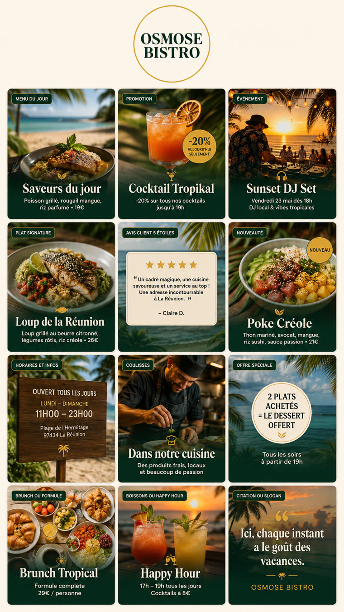

Osmose Bistro — trois directions pour un feed qui tient debout
La version d'hier produisait une seule image : une affiche 9:16 contenant douze
vignettes miniatures. Un feed ne se juge pas sur une affiche, il se juge sur
la grille du profil. Ces trois variantes sont donc générées
tuile par tuile, en pleine résolution, et présentées telles qu'on les verrait
en ouvrant le compte.
Exécution n8n 75713 du 19/08. Une image unique, générée d'un seul coup.
Voici précisément ce qui l'éloigne d'un feed premium — ce sont des constats sur cette image,
pas des généralités.

Ce n'est pas un feed, c'est une afficheDes cartes arrondies avec ombre portée, flottant sur un fond crème. Aucun profil Instagram ne ressemble à ça — le restaurateur ne peut pas s'y projeter.
12 vignettes sur 12 portent du texteÉtiquette + titre + ligne descriptive, douze fois. Les feeds travaillés font l'inverse : le texte est l'exception.
La taxonomie interne fuit dans l'imageOn lit « AVIS CLIENT 5 ÉTOILES » et surtout « CITATION OU SLOGAN » — le nom de la catégorie du prompt, avec son « ou ». Signature de génération automatique.
Vocabulaire promo discountPastille « −20 % AUJOURD'HUI SEULEMENT », badge « NOUVEAU », médaillon « 2 PLATS ACHETÉS = LE DESSERT OFFERT ». C'est le registre du fast-food, pas de la bistronomie.
Des faits inventés, et fauxL'image annonce « Plage de l'Hermitage 97434 » — Osmose est à Saint-Pierre, à l'autre bout de l'île. Elle annonce « ouvert lundi–dimanche 11h–23h » alors que la bio dit Mer-Sam 11h-23h et Dim 8h30-23h. Et sept prix (19 €, 26 €, 21 €, 29 €, 8 €…) sortis de nulle part.
Douze fois la même compositionPhoto en haut, panneau vert dégradé en bas, titre serif centré, deux lignes. Aucune variation d'échelle ni de cadrage : pas de respiration.
Chaque vignette fait ~290 px de largeLe texte est mou et illisible. Aucune de ces douze « publications » n'est réellement publiable.
Ce qui sépare un feed travaillé d'un feed bricolé
Le point commun des comptes de restaurants qui tiennent : la grille est traitée comme
une seule image en neuf morceaux. C'est ce principe qui est câblé dans les trois variantes.
01Un étalonnage uniqueLa cohérence ne vient pas du logo, elle vient de la lumière. Erreur n°3 des feeds ratés selon Studio Kahi : des températures de couleur qui changent d'une photo à l'autre. Ici, un seul bloc d'étalonnage est injecté dans les neuf prompts.
02Deux ou trois couleurs, pas douzeErreur n°1 : « beaucoup de couleurs différentes sur leur feed ». La recommandation sourcée est 2–3 couleurs principales + 2 secondaires. L'ancienne version en empilait cinq plus les couleurs de chaque photo.
03Une seule typographieErreur n°2 : le mélange de polices « véhicule des messages contradictoires ». Trois caractères maximum. L'ancienne version en utilisait deux par vignette, plus une étiquette.
04Un rythme structurelErreur n°4 : sans mise en page récurrente, l'audience a « des difficultés à identifier votre marque ». Les grilles travaillées reposent sur 3–4 gabarits réutilisés — damier, colonne du milieu, ou diagonale (une tuile similaire toutes les 4 positions).
05De la respirationErreur n°5 : des marges trop fines donnent « un rendu visuel surchargé et oppressant ». Une tuile sur trois porte une matière, un mur, une nappe — pas un argument.
06Une résolution réelleChaque tuile est une vraie image 1:1 exportable, pas une miniature dans un poster. C'est la différence entre une maquette et un feed livrable.
Le texte sur l'image n'est pas l'ennemi — c'est un arbitrage.
Sur un échantillon de 1 000 publications Instagram, Fanpage Karma trouve que
plus des deux tiers portent du texte directement sur l'image, et que ces
publications font +38 % de portée et +40 % d'engagement par abonné.
Mais les visuels sans texte surperforment de près de 60 % en interactions
par vue. Autrement dit : le texte achète de la portée et coûte de l'intensité.
C'est exactement l'axe sur lequel les trois variantes ci-dessous se séparent —
A et C n'en portent aucun, B en porte trois sur neuf.
Contre-exemple utile : Big Mamma (439 519 abonnés) a un feed
maximaliste, pas minimal — vaisselle et casseroles vintage, codes très marqués.
« Premium » ne veut donc pas dire « vide ». Ça veut dire tenu.
À noter aussi : leur taux d'engagement calculé est d'environ 0,24 %, contre 0,77 %
pour @osmosebistro aujourd'hui. Un gros feed premium n'est pas un feed très engageant.
Limite de cette analyse, dite franchement : aucune grille de restaurant n'a pu être observée directement.
Instagram renvoie un mur de connexion en navigation automatisée (test de contrôle effectué sur
un site simple au préalable : le navigateur fonctionnait, c'est bien Instagram qui bloque),
le miroir imginn.com répond 403, et le listing des publications de l'outil de scraping
est réservé à un abonnement Pro (message exact : « Listing Instagram user posts requires a
Pro or Premium subscription »). Seules les fiches de profil ont pu être lues —
@bigmammagroup et @osmosebistro ont répondu ; septime_paris, noma_cph, frenchie_rue_du_nil,
mokonuts_paris, clamato_paris et lemeurice_paris ont tous échoué.
Les six règles ci-dessus viennent donc de la littérature de design de grille
(Studio Kahi, Plann, Hootsuite, Malou, Fanpage Karma), pas de l'observation de ces comptes.
Le seul moyen d'avoir la vérité tuile par tuile serait le scraper Apify facturé (~0,15 $/appel),
volontairement non déclenché ici.
Les trois directions
Elles ne sont pas trois nuances du même parti pris : elles se contredisent volontairement sur
combien un feed doit vendre. A ne vend rien et séduit. B affiche la marque et achète de la
portée avec ses trois tuiles typographiques. C change carrément le créneau du restaurant.
Chaque grille est un ensemble de neuf images distinctes partageant un seul bloc
d'étalonnage — c'est ce partage, et rien d'autre, qui fait la cohérence.
Variante A
L'Oasis
Zéro texte sur les neuf tuiles : le feed se feuillette comme un magazine, c'est la
lumière et la matière qui donnent envie, jamais un argument.
La seule sans un seul mot. Le risque assumé : « ça ne vend rien ».
‹ osmosebistro
OB
9publications
4 438abonnés
312suivis
Osmose Bistro
Restaurant
L'oasis du front de mer Bistronomie locale · cocktails peï Terrasse végétale & rooftop
▦▶♡
Variante B
Signature
Six photos nettes et graphiques, plus trois cartons typographiques posés en diagonale :
la marque respire entre les plats au lieu de crier dessus.
La seule qui porte des mots — et seulement trois tuiles sur neuf.
‹ osmosebistro
OB
9publications
4 438abonnés
312suivis
Osmose Bistro
Restaurant
L'oasis du front de mer Bistronomie locale · cocktails peï Terrasse végétale & rooftop
▦▶♡
Variante C
Nuit Peï
On bascule le compte sur le créneau du soir : nocturne, macro serré, quasi-monochrome,
une seule couleur d'accent. L'ambiance d'un bar à cocktails, pas d'une brasserie du midi.
La seule qui change le positionnement et pas seulement l'habillage.
‹ osmosebistro
OB
9publications
4 438abonnés
312suivis
Osmose Bistro
Bar · Restaurant
L'oasis du front de mer Cocktails peï · sunset & live Rooftop face au lagon
▦▶♡
Les trois, ligne à ligne
A — L'Oasis
B — Signature
C — Nuit Peï
Tuiles avec texte
0 / 9
3 / 9 (positions 1, 5, 9)
0 / 9
Lumière
Jour, naturelle, latérale
Jour, vive et égale
Nuit, une source chaude
Cadrage
Asymétrique, décentré
Centré, symétrique
Macro très serré
Palette
Vert feuillage, ocre, bois, crème
Vert bouteille + crème + terracotta
Noir, vert-noir, corail
Grain
Grain argentique fin
Aucun, tout net
Voile atmosphérique
Ce que ça vend
Une envie, un lieu
Une marque identifiable
Une soirée
Créneau visé
Déjeuner & dîner
Toute la journée
18 h → minuit
Objection prévisible
« On ne voit ni prix ni promo »
« C'est le choix sage »
« Trop sombre pour un midi front de mer »
Notes honnêtes
Aucun plat, aucun prix, aucun horaire n'a été inventé.
Les visuels montrent des standards de bistrot réunionnais (poisson grillé, rougail, riz, poke,
cocktails) sans les nommer comme des plats de la carte et sans aucun prix — la vraie carte
d'Osmose n'est pas connue. Les seuls textes affichés (bio, horaires, adresse, nom, nombre
d'abonnés) viennent de leur propre compte @osmosebistro et de leur fiche Google.
À remplacer par la vraie carte avant tout envoi client.
Les trois cartons typographiques de la variante B sont rendus en HTML, pas générés en image.
C'est volontaire : les modèles d'image massacrent les accents français et inventent des mots.
En production, ces trois tuiles doivent être exportées en PNG 1080×1080 par une étape
HTML→image — cette étape n'est pas encore câblée dans le workflow.
Les photos sont générées, pas photographiées. Elles servent à montrer une direction
artistique, pas à être publiées telles quelles : un feed final utilise les vrais plats et la
vraie salle du restaurant. C'est la maquette d'un feed, pas son contenu.
Sources
Tout ce qui est chiffré ci-dessus vient de là.
Les 5 erreurs d'un feed non harmonieuxstudiokahi.com — couleurs, polices, photographie, rythme, marges.